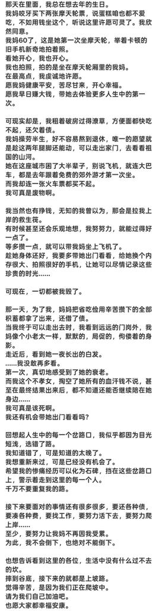
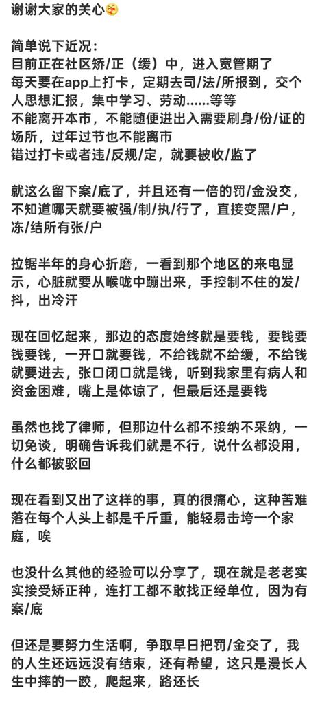
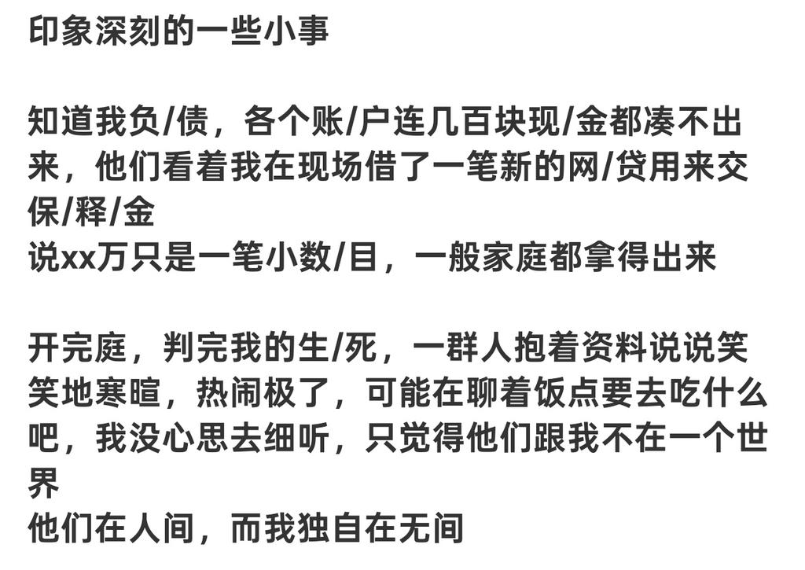
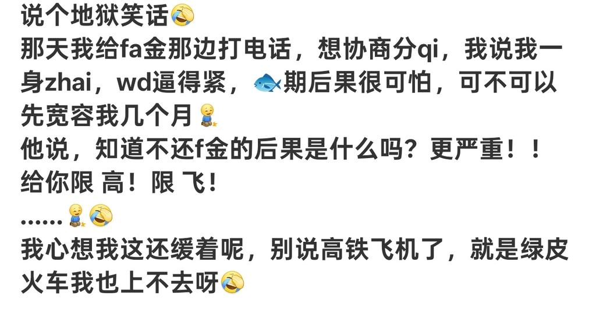

鸿哎彬
@hongaibin
@liulingyue 你什么都无所谓了,都不在乎不要了,你看你还会被为难吗




panchiao🚩🏴🏴☠️🏳️⚧️🏳🌈
@liulingyue
看到个已经被冻结的作者，法院轻飘飘一句“xx万只是一笔小数目，一般家庭都拿得出来”。
现在她被冻结以后连医院的号都不好挂（后来走现金挂上），借的几百块生活费也被划走。
根据相关规定，是得给人留生活费的……结果实际执行起来就全变了，直接全吃。
如果没有家庭、亲人兜底，这不就是逼人歼35？ https://t.co/m69ZVZAxF8